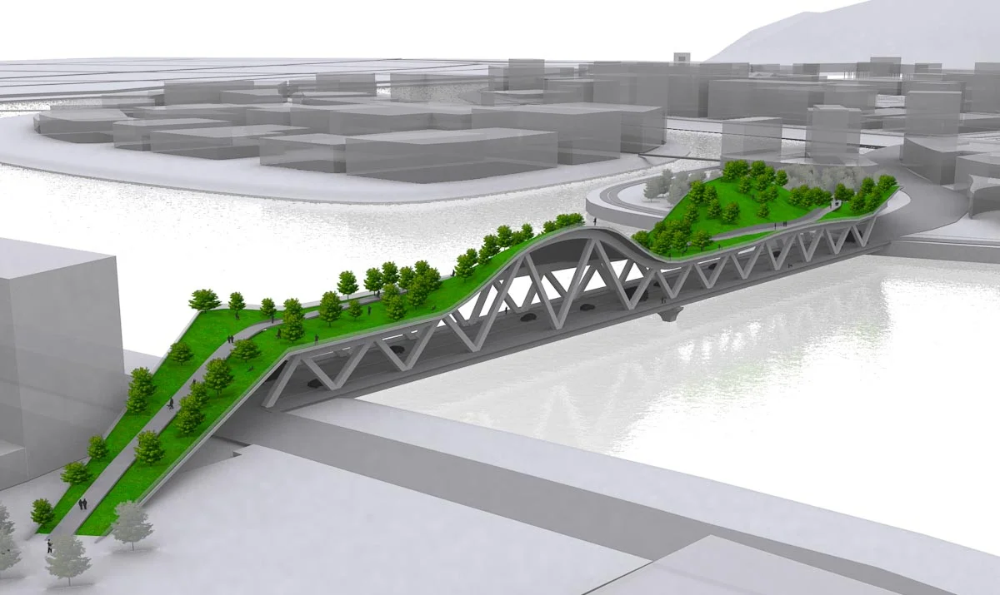
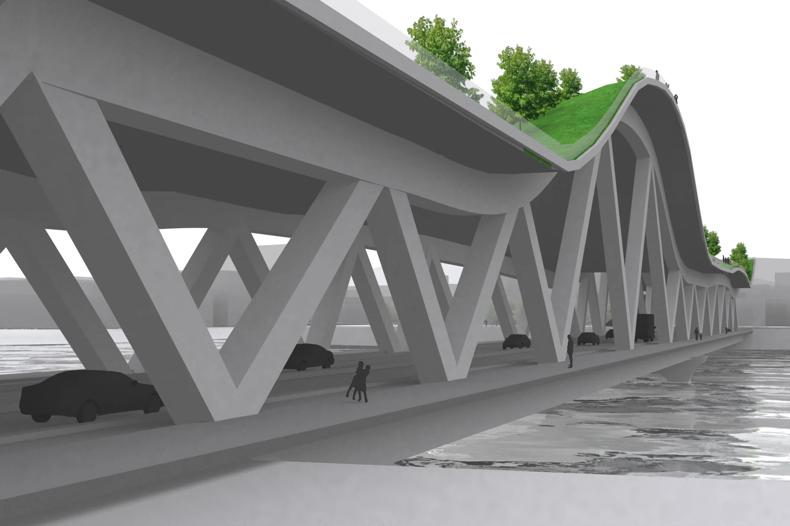
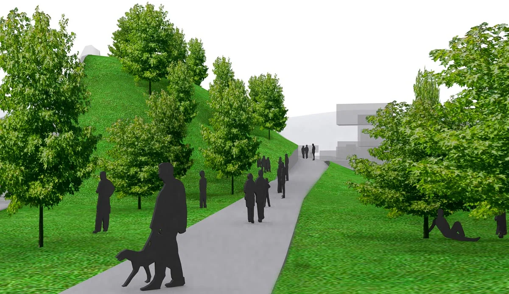

Scroll for more → click any image to view full size

Bridge at dusk, in context with the skyline

Aerial structure

Underside structure, traffic below, park above

Pedestrian park level
An inhabitable ecological corridor spanning the river at the center of MVRDV's Chengdu water city masterplan, combining transportation, playground, public space, and landscape in a single structure.
A triangulated concrete truss carries vehicular traffic below while a continuous planted surface rises from grade on either bank to form a park across the water, folding a highway crossing into a piece of civic landscape rather than treating it as pure infrastructure.


